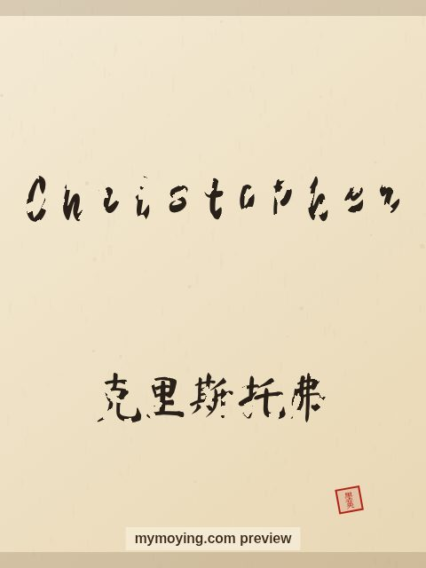

Christopher in Chinese Calligraphy
Here is Christopher in Chinese calligraphy — the English letters drawn in brush style, plus the Chinese form 克里斯托弗.

Sample. “Christopher” in the Regular (楷书) brush style with the Chinese name 克里斯托弗 (Kè lǐ sī tuō fú). The paid file removes the watermark.
The Chinese characters for Christopher
As a transliteration, Christopher is usually written 克里斯托弗 (Kè lǐ sī tuō fú). Each character is listed below with its own dictionary meaning — the name is chosen by sound, not by meaning, and Moying does not translate names. Please have a person review the characters before any permanent use such as a tattoo.
Origin and meaning
The name Christopher has Greek roots and means “bearer of Christ”.
About the name Christopher
Saint Christopher is the legendary patron of travellers.
As a gift or a tattoo
If you are choosing a name for a print or a tattoo, Christopher carries the meaning “bearer of Christ” and looks striking in brush strokes.
Open Christopher in the generatorFree watermarked preview. $1.99 once for a clean high-resolution download of this name in every style and setting. No subscription. Digital product, delivered instantly; see Terms.